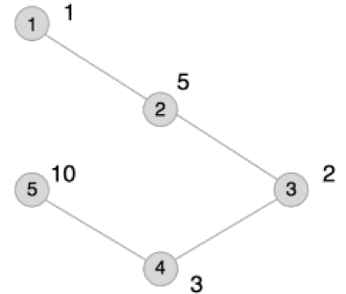

无向连通图 $G$ 有 $n$ 个点，$n-1$ 条边。点从 $1$ 到 $n$ 依次编号，编号为 $i$ 的点的权值为 $W_i$，每条边的长度均为 $1$。图上两点 $(u, v)$ 的距离定义为 $u$ 点到 $v$ 点的最短距离。对于图 $G$ 上的点对 $(u,v)$，若它们的距离为 $2$，则它们之间会产生 $W_u×W_v$ 的联合权值。
请问图 $G$ 上所有可产生联合权值的有序点对中，联合权值最大的是多少？所有联合权值之和是多少？
第一行包含1个整数n。
接下来 n-1 行，每行包含 2 个用空格隔开的正整数 $u、v$，表示编号为 $u$ 和编号为 $v$ 的点之间有边相连。
最后 $1$ 行，包含 $n$ 个正整数，每两个正整数之间用一个空格隔开，其中第 $i$ 个整数表示图 $G$ 上编号为 $i$ 的点的权值为 $W_i$。
输出共 $1$ 行，包含 $2$ 个整数，之间用一个空格隔开，依次为图 $G$ 上联合权值的最大值和所有联合权值之和。由于所有联合权值之和可能很大，输出它时要对 $10007$ 取余。
5 1 2 2 3 3 4 4 5 1 5 2 3 10
20 74
【样例说明】

本例输入的图如上所示，距离为 $2$ 的有序点对有 $(1,3)、(2,4)、(3,1)、(3,5)、(4,2)、(5,3)$。其联合权值分别为 2、15、2、20、15、20。其中最大的是 20，总和为 74。
【数据说明】
对于30%的数据，$1<n≤100$；
对于60%的数据，$1<n≤2000$；
对于100%的数据，$1<n≤200,000，0<W_i≤10,000$。
 Comet OJ
Comet OJ